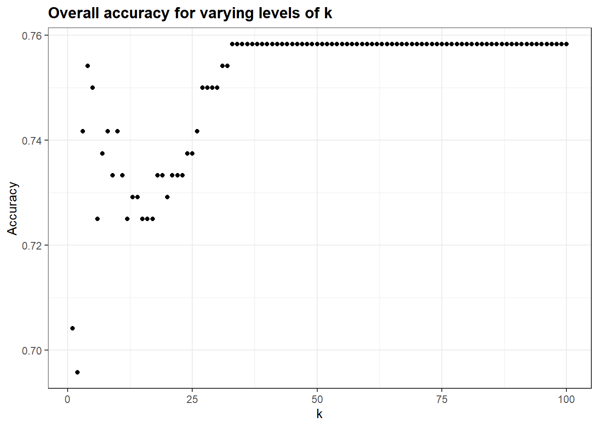

19 prediction and classification
If we want to classify people, we will need to create a decision threshold at which we will change our prediction from ‘no’ to ‘yes’.
19.1 from regression to classification: selection of a threshold
We will continue to work with the affairs data; here’s the relevant code from last chapter:
# code from last chapter on Fair data
Fair <- Fair %>%
mutate(rootAffair =
as.integer(sqrt(nbaffairs))) %>%
mutate(affairYN =
ifelse (nbaffairs > 0,1,0))
set.seed(33458)
n <- nrow(Fair)
trainIndex <- sample(1:n, size = round(0.6*n),
replace=FALSE)
trainFair <- Fair[trainIndex ,]
testFair <- Fair[-trainIndex ,]
trainFair2 <- trainFair %>%
select(-nbaffairs, -affairYN)
testFair2 <- testFair %>%
select(-nbaffairs, -affairYN)
model2 <- lm(rootAffair ~ .,
data = trainFair2)
predictTrain <- predict(model2, trainFair,
type = "response")To maximise overall prediction, we will create a threshold equal to the actual proportion of people who don’t have affairs in our sample:
## [1] 0.2548476This is equal to both the mean of our predicted scores (above) and the mean of our actual scores, and, because this is a dichotomous variable, the proportion of people in the sample who have affairs. We’ll predict that if a person has a predicted score more than this we’ll predict that s/he will be unfaithful, else we will “PredictOK.” Then we will create a confusion matrix, to compare our correct predictions (PredictOK and affairYN = 1, Predictunfaithful and affairYN = 0) with the remainder.
classification <- ifelse(predictTrain > threshold,
"Predictunfaithful", "PredictOK")
(b <- table(classification, trainFair$affairYN))##
## classification 0 1
## PredictOK 107 18
## Predictunfaithful 162 74## [1] 181## [1] 180## [1] 0.50138519.1.1 applying the model to the test data
We shouldn’t trust these results, though, because the model is based on the same data that it is tested upon. Now we will apply the model to the test data. With the linear regression model above, we examined ‘shrinkage’ in the overall R-square. Here, we can assess shrinkage in terms of the percent of erroneous classifications.
Typically (but not invariably), the percent of accurate classifications will decline, especially if the model is a complex one with many variables or if the number of observations is low.
predictTest <- predict(model2, testFair, type = "response")
classification <- ifelse(predictTest > threshold,
"Predictunfaithful", "PredictOK")
(b <- table(classification, testFair$affairYN))##
## classification 0 1
## PredictOK 73 9
## Predictunfaithful 109 49## [1] 122## [1] 118## [1] 0.5083333On the test data, we are correct 51 percent of the time. This describes our out of sample risk.
19.1.2 changing our decision threshold
In many decision problems, there is an asymmetry in the cost of different types of errors: if you are foraging for mushrooms, for example, an error of the form (you decide its safe and it is poisonous) is more costly than the converse (you decide its poisonous and it is safe).
This may be true in the present example as well. Consider someone who is looking for a spouse, but is really averse to the idea of getting hurt by an affair. That person might feel like the cost of marrying an unfaithful person is much greater than the cost of not marrying a faithful one. So we adjust the threshold downwards:
threshold <- .05
classification <- ifelse(predictTest > threshold,
"Predictunfaithful", "PredictOK")
(b <- table(classification, testFair$affairYN))##
## classification 0 1
## PredictOK 27 3
## Predictunfaithful 155 55## [1] 82## [1] 158## [1] 0.3416667The “overall accuracy” - that is, number of correct classifications - drops. But that’s not what we are really interested in, rather, we are interested in minimizing hurt.
Here’s another example: Someone who is very lonely might feel the opposite, and be willing to accept greater substantially greater risk.
threshold <- .5
classification <- ifelse(predictTest > threshold,
"Predictunfaithful", "PredictOK")
(b <- table(classification, testFair$affairYN))##
## classification 0 1
## PredictOK 111 21
## Predictunfaithful 71 37## [1] 148## [1] 92## [1] 0.6166667Prediction is higher here - but not much higher than it would be if we raised the threshold even further, and just assumed that everyone can be trusted. Then, our error rate would be 25 percent. When overall predictability is low, it’s often the case that you can maximize correct predictions by simply predicting that everyone will be in the most popular category. Predicting rare events, such as suicides, is particularly difficult.
19.1.3 more confusion
There is a nice shortcut to generating confusion matrices such as those above using the caret package.
This function describes outcomes in several ways, as there are many languages for describing outcomes in 2 x 2 tables, including Type I vs. Type II errors, Hits vs. False Alarms/False Positives, and Sensitivity vs. Specificity.
In these data, it’s been set up so that
- hit rate ~ sensitivity ~ (“no affair” | no affair)
- correct rejection ~ specificity ~ (“affair” | affair)
threshold <- .5
# syntax for classification in caret is a little different
# (the labels for the actual and predicted scores have to be the same)
#classification <- ifelse(predictTest > threshold,
# "Predictunfaithful", "PredictOK")
classification <- ifelse(predictTest > threshold, 1,0)
# caret package (newest) requires explicit matching of factors
classification <- as.factor(classification)
testFair$affairYN <- as.factor(testFair$affairYN)
confusionMatrix(classification, testFair$affairYN)## Confusion Matrix and Statistics
##
## Reference
## Prediction 0 1
## 0 111 21
## 1 71 37
##
## Accuracy : 0.6167
## 95% CI : (0.5519, 0.6785)
## No Information Rate : 0.7583
## P-Value [Acc > NIR] : 1
##
## Kappa : 0.1916
##
## Mcnemar's Test P-Value : 3.245e-07
##
## Sensitivity : 0.6099
## Specificity : 0.6379
## Pos Pred Value : 0.8409
## Neg Pred Value : 0.3426
## Prevalence : 0.7583
## Detection Rate : 0.4625
## Detection Prevalence : 0.5500
## Balanced Accuracy : 0.6239
##
## 'Positive' Class : 0
## 19.1.4 ROCs and AUC
Each of these decision thresholds describes the performance of a model at a particular point. We can combine the thresholds and plot them in Receiver Operating Characteristic (ROC) curves. The area under the curve (AUC) is a great measure of model accuracy, in that it summarizes how effective a classifier is across all possible thresholds.
# fig.width and fig.height specified to get square plots
# colAUC function gets stats etc
AUCModel <- colAUC(predictTest, testFair[["affairYN"]], plotROC = TRUE)
## [,1]
## 0 vs. 1 0.666256219.2 another approach to classification: k-nearest neighbor
Real-life social predictions are often guided not by induction or the (optimized) combination of a set of predictor variables. Rather, we often reason by analogy - we might think, for example, that I won’t go out with Fred because he reminds me of Larry, and Larry was kind of a jerk.
If regression analysis is an approach to prediction based in our set of variables, k-nearest neighbor analysis instead makes predictions based on observations.
Formally, as described in the documentation for the knn package,
For each row of the test set, the k nearest (in Euclidean distance) training set vectors are found, and the classification is decided by majority vote, with ties broken at random. (ref).
In the simplest form of this analysis, we find the nearest thing to a “doppelganger” (a look-alike or near double) for a given observation. So, in the affairs data, if a person is most like someone else in the dataset who has had an affair, we predict an affair, else not.
19.2.1 application: the affairs data
Begin by loading the affairs data from last time. Using the same seed (33458) means that the same set of training and test cases will be extracted as in the prior analysis
data(Fair)
# one change here: Note the bidirectional pipe to simplify code
# use only when you are sure that your file update is ok
Fair %<>% # <- Fair %>%
mutate(affairYN =
# nbaffairs is set up as a factor
# to allow confusionmatrix to run
as.factor(ifelse(nbaffairs > 0,1,0))) %>%
# unlike the lm and glm commands, knn will not automatically create our dummy # variables for us. so we need to do this manually.
mutate(sexMale = ifelse(sex == "female", 0, 1)) %>%
mutate(childyes = ifelse(child == "no", 0, 1)) %>%
select(-(c(sex,child,nbaffairs)))
set.seed(33458)
n <- nrow(Fair)
trainIndex <- sample(1:n, size = round(0.6*n), replace = FALSE)
# create training and test samples
trainFair <- Fair[trainIndex ,]
testFair <- Fair[-trainIndex ,]To run a k-nearest neighbor analysis, we need three inputs: our predictors in the training data, our predictors in the test data, and our outcome/classes in the training data.
Here, as in the regression analysis in the last chapter, we can generate a confusion matrix to assess the accuracy of prediction:
set.seed(33458)
trainPredictors <- trainFair %>%
select(-affairYN)
testPredictors <- testFair %>%
select(-affairYN)
knnAffair <- knn(trainPredictors, # training data
testPredictors, # test data
trainFair$affairYN, # class
1 # number of neighbors
)
b<-confusionMatrix(knnAffair, testFair$affairYN)
b## Confusion Matrix and Statistics
##
## Reference
## Prediction 0 1
## 0 143 32
## 1 39 26
##
## Accuracy : 0.7042
## 95% CI : (0.6421, 0.7611)
## No Information Rate : 0.7583
## P-Value [Acc > NIR] : 0.9772
##
## Kappa : 0.2247
##
## Mcnemar's Test P-Value : 0.4764
##
## Sensitivity : 0.7857
## Specificity : 0.4483
## Pos Pred Value : 0.8171
## Neg Pred Value : 0.4000
## Prevalence : 0.7583
## Detection Rate : 0.5958
## Detection Prevalence : 0.7292
## Balanced Accuracy : 0.6170
##
## 'Positive' Class : 0
## ## [1] 0.704166719.2.2 from one doppelganger to many
In the above code, we used a k-nearest neighbor analysis based on a single ‘neighbor’ (k = 1). Can we improve prediction by considering more than 1 neighbor?
19.2.3 the Bayesian classifier
Lisa is a doctor whose patients often have post-surgical pain. Their suffering is real, but effective pain medications such as OxyContin have a high likelihood of leading to abuse and addiction. She has two bits of information about a patient, his or her age (say that we have this in ten levels, corresponding to decades of age, so that the first level is “under 20” and that the last level is “over 100”), and his or her self-report of pain, also on a 10 point scale.
Assume that Lisa wants to prescribe the medication to all patients who would not abuse it, and not prescribe the medication to anyone who would.
Assume that Lisa knew the entire matrix of conditional probabilities,
P (addiction | “age < 20” & “pain = 1”) = .34
P (addiction | “age < 20” & “pain = 2”) = .26
… P (addiction | “age > 100” & “pain = 10”) = .09
In this case she would prescribe the drug for every case where the conditional probability was greater than .5, and never otherwise. This is called the Bayesian classifier, and if we have the entire matrix of conditional probabilities we could do no better.
In real world problems, we are typically dealing with many predictors, and we don’t have the full matrix of conditional probabilities. But this two predictor case “sets up” the illustration drawn from (James et al. 2013a).

Figure 10.1: Comparing two values of k (From (???))
In the figure above, assume that the horizontal and vertical axes correspond to scores on the two predictors (age and pain). The orange and blue colored dots correspond to cases of abuse and non-abuse in the training data. The dashed line is the Bayesian classifier. The solid line is the k-nn decision boundary, which distinguishes the regions in which we will predict abuse and non abuse in the test data. We see that when k is small (a single neighbor), prediction is flexible, non-linear, and that as k increases, the boundary differentiating the decision to prescribe and not prescribe becomes more nearly linear.
But what value of k is optimal?
19.2.4 Back to the affairs data
To test a range of values, we can first set up our knn analysis as a function (compare this code with the code in the prior section).
trainPredictors <- trainFair %>%
select(-affairYN)
testPredictors <- testFair %>%
select(-affairYN)
knnFairdata <- function (k) {
set.seed(33458)
knnAffair <- knn(trainPredictors, # training data
testPredictors, # test data
trainFair$affairYN, # class
k # number of neighbors
)
b<-confusionMatrix(knnAffair, testFair$affairYN)
b[["overall"]][["Accuracy"]]
}We run the function on k = 1 and k = 2 to test it:
## [1] 0.7041667## [1] 0.6958333Now we can apply it to as many as 100 values of k, using the purrr::map command:
kAccuracy <- (map_dbl(1:100,knnFairdata)) %>% # map the knnFunction onto numbers 1-100
as_tibble() %>% # then a tibble so we can do a quick plot
rename(Accuracy = 1) %>%
mutate(k = seq_along(Accuracy))We can graph this, using the syntax from the beginning of the class:
kAccuracy %>%
ggplot(aes(k, Accuracy)) +#%>%
geom_point() +
ggtitle("Overall accuracy for varying levels of k")
# This pulls out the maximum accuracy, and the value of k for which it occurs:
(ka <- which.max(kAccuracy$Accuracy))## [1] 33## [1] 0.758333319.2.5 avoiding capitalization on chance (again)
In these data, with this split of training and test (and this initial seed) the maximum predictability occurs at k = 33, with an overall accuracy of 0.7583333.
Would this hold if we used a different random split? Remember, here, we have tested not one model, but 100 of them, then chosen the best one. The peak in the curve at 33 may well be due to chance characteristics of the test data.
We could address this empirically using one of several techniques. One approach is to have a third independent sample on which to test the accuracy of prediction at k = 33. This would require the separate validation sample that was introduced in the last chapter.
In the following block, I resplit the Fair data, using proportions of 60%, 30%, 10%. These values are likely not optimal given the (relatively small) size of the Fair data, but will work to illustrate the approach:
set.seed(33458)
threeWaySplit <- sample(1:3, size = nrow(Fair),
prob = c(0.6,0.3,0.1),
replace = TRUE)
trainFair2 <- Fair[threeWaySplit == 1,]
testFair2 <- Fair[threeWaySplit == 2,]
validFair2 <- Fair[threeWaySplit == 3,]I tweak my function here to use the new data, then run it 100 times as before.
trainPredictors <- trainFair2 %>%
select(-affairYN)
testPredictors <- testFair2 %>%
select(-affairYN)
knnFairdata2 <- function (k) {
set.seed(33458)
knnAffair <- knn(trainPredictors, # training data
testPredictors, # test data
trainFair2$affairYN, # class
k # number of neighbors
)
b<-confusionMatrix(knnAffair, testFair2$affairYN)
b[["overall"]][["Accuracy"]]
}
kAccuracy <- (map_dbl(1:100,knnFairdata2)) %>% # map the knnFunction onto numbers 1-100
as_tibble() %>% # then a tibble so we can do a quick plot
rename(Accuracy=value) %>%
mutate (k = seq_along(Accuracy))
(ka2 <- which.max(kAccuracy$Accuracy))## [1] 15## [1] 0.7802198So here, on the (contaminated) test data, the maximum predictability occurs at k = 15, with an overall accuracy of 0.7802198. We apply this back to the validation data by pulling the knn code out of the function, and running it just once against the validation data:
knnAffair <- knn(trainFair2[,-7], # training data
validFair2[,-7], # VALIDATION data
trainFair2$affairYN, # class
ka2 # number of neighbors
)
b <- confusionMatrix(knnAffair, validFair2$affairYN)
(kb3 <- b[["overall"]][["Accuracy"]])## [1] 0.703125The overall predictability using the k-nearest neighbor analysis on the clean validation data, is now 0.703125.
You might note that in our two splits of the Fair data - the two-way split of 60% Training and 40% Test, and the three-way split of 60% Training, 30% Test, 10% Validation, we got two different solutions to the question of the ‘optimal k’ (i.e., 33 and 15). With larger sample sizes, these values would be more stable.
19.2.6 the multinomial case
A final comment on the k-nearest neighbors approach: You can extend this to classification problems in which we are predicting not just a dichotomous outcome, but a multinomial one - such as a personality type or college concentration.
references
James, Gareth, Daniela Witten, Trevor Hastie, and Robert Tibshirani. 2013a. An Introduction to Statistical Learning. Vol. 112. Springer.